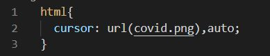
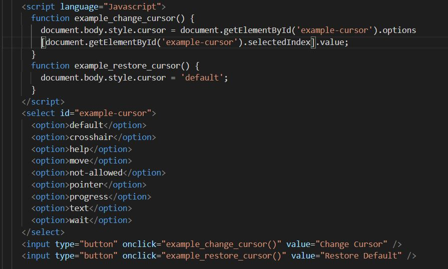

Blog Entry #6
10/14/2021
Cursors
A common theme in my blog entires, this post was inspired by a random sighting out on the web. I was on Reddit, and noticed that whenever I visited a particular subreddit (can't remember which) my cursor would change from its default white arrow. I guess moderators of some subreddits have CSS permissions on their pages.
Naturally, I decided to investigate how I could do this myself.
The code couldn't be simpler. You just set the cursor attribute to an image sourced by url or file-path. It will only show up in whatever field you apply this tag. You'll notice that I have it in the margins, which I accomplished by first setting a custom cursor page-wide then overriding it in the body to the default cursor. The image choice was arbitrary, just one I had lying around.
For something a little more complex, here is a tool that can dynamically change the cursor to some of the system-wide options. It takes advantage of the same CSS field shown above but uses JS to switch between cursors.
There is a reason the custom cursor trend that died out in the 2000s. They can just be annoying, especially if they are page-wide. And actually having to click links and highlight text is made unnecessarily hard. Still, this was a useful skill to have picked up. Now if I want to have a movable component on my site, for example, I'll be able to make it intuitive to the user by invoking the moving cursor style.